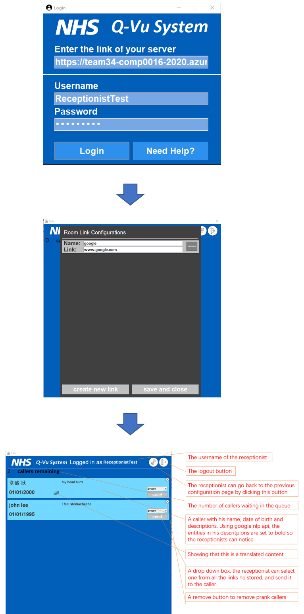

Java Client Implementation
General introduction
The client for the receptionists is coded using java. The project is managed and built using maven. The libraries in use is java standard libraries, google nlp libraries. The UI design uses java swing library.
Source code introduction
There are three packages and one main class "App" responsible for the execution process.
Inside Pages package, there are three classes, each responsible for the login page, link configuration page, main page.
Inside Dialogues package, there are dialogues that will be shown to user when certain behaviours occur.
Inside Widgets package, there are classes designed to implement the client.
All the classes are sufficiently commented in javadoc formats for each method/class.
Please view source code for more information.
Client work flow

After starting the program, the receptionist sees a login page, on which he is able to enter his username, password and the address of the server in use. There is also a needhelp button, he gets all the necessary information from it when he needs technical support.
After logging in, he sees a configuration page, on which he can add up to 10 links and store them. He can also remove any of them using remove. But he has to configure at least 1 link to send to the callers.
After he clicked on the save and close button, the internal timer of the program starts, and the program gets the changes of the callers queue from the server every 10 seconds. The name, date of birth of the callers are presented to the receptionist. The description received is sent to a google natural language processing server, and that server returns a list of keywords. Then the client sets all the keywords in the description in bold and display it to the receptionist.
The receptionist can then send any link he configured to the caller using the drop-down box. After he clicks on send, the client sends the server relevant information, and stores this caller in a txt file. The receptionist can also remove any prank callers using the cross button on the top right corner, and the client send a warning to the caller.
The receptionist can click on the settings button and configure the links at any time, he can click on the logout button to log out of the account. The client then informs the server that this receptionist has logged out.
Plugins and dependencies
This project is managed and built using maven. It relies on following plugins/dependencies:
Shade plugin, launch4j plugin: These plugins are responsible for generating an .exe file for the project. They are included to produce an executable file for the project, and there isn't many details to explain.
Google nlp dependency: This dependency is responsible for highlighting keywords in user's descriptions. After the client gets the user's description from the server, the client sends it to the google nlp server and the google nlp server sends back a list of keywords of that description. Then the client displays the description on the screen with the keywords in bold
Authentication and interaction with the server
The interaction with the server is achieved using http get and post methods.
The cookies sent from the server are managed by a single cookie manager.
The client gets the username and password and send them to the server using post method, then get the confirmation from the server using get method.
The client keeps receiving changes of the queue sent from the server and updates it on the screen.
Whenever a decision is made by the receptionist, the client sends it to the server using post method.
When the receptionist has logged out, the client sends this info to the server.
Deployment
There are jar and executable files for this project, with more details specified in the Receptionist/ReceptionistClient/readme.txt in the github repository.
Data recording
The callers records are stored in a txt file. Ideally, all the caller data should be stored in a online database, since we are not given any available NHS database, we can only store the data locally.